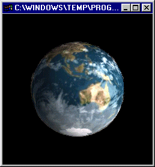

urce source source source source source source source source source source |
[program four] This example uses the same 'framework' as the previous three programs. We discover how manage multiple textures and introduce transparency effects to give our planet a weather system.

We declare some
more global variables to help us manage the textures and clouds. Line 1
defines a macro constant as "2" - this number if the maximum number of
textures used by the program. Line 6 declares the 'texture name' array -
there are 2 names. The values are enumerated below this in lines 3 and 4.
Line 8 is similar to the previous examples, but we have
a new variable called 'cloud_rot'
that will hold the value of rotation for our cloud sphere.
[1] #define MAX_NO_TEXTURES 2
[2]
[3] #define EARTH_TEXTURE 0
[4] #define CLOUD_TEXTURE 1
[5]
[6] GLuint texture_id[MAX_NO_TEXTURES];
[7]
[8] float angle, angle2, cloud_rot;
Lines 1-11 in our intialisation function are the same as before. We set up the illumination model and material properties.
[1] void init ( void )
[2] {
[3]
[4] glEnable ( GL_LIGHTING );
[5] glLightModelfv (
GL_LIGHT_MODEL_AMBIENT, ambient_light );
[6] glLightfv ( GL_LIGHT0,
GL_DIFFUSE,source_light );
[7] glLightfv ( GL_LIGHT0,
GL_POSITION,light_pos );
[8] glEnable ( GL_LIGHT0 );
[9]
[10] glEnable ( GL_COLOR_MATERIAL );
[11] glColorMaterial ( GL_FRONT,
GL_AMBIENT_AND_DIFFUSE );
Next we enable opengl texturing. The function on line 13 again tells opengl how pixels are stored in the image array we're going to give it. The parameters here set it up so that each pixel is tightly packed as before. Line 14 tells opengl to create "2" new texture names and place them into the 'texture_id' array.
[12] glEnable ( GL_TEXTURE_2D );
[13] glPixelStorei ( GL_UNPACK_ALIGNMENT, 1
);
[14]
glGenTextures (2,
texture_id);
Line 15 sets the current active texture to 'texture_id[0]',
any succeeding call to opengl will affect the texture bound to this texture
name.
Line 16 calls our texture load function, notice that we specify that our texture
is made up from red, green and blue values (GL_RGB)
and that we want texture filtering to be off.
[15]
glBindTexture ( GL_TEXTURE_2D, texture_id[0] );
[16] load_texture ( "earth_r.raw", 640, 320, 3,
GL_RGB, GL_NEAREST );
Line 17 sets the current active texture to 'texture_id[1]',
any further calls to opengl will affect the texture bound to this texture
name. Get the idea?
Line 18 makes another call to the texture load function. This time notice that we
load the texture as a GL_LUMINANCE
file and that it only has one channel. This second image is a greyscale
image and so consists entirely of brightness levels (hence the name, luminance).
[17]
glBindTexture ( GL_TEXTURE_2D, texture_id[1] );
[18] load_texture ( "cl_lum.raw", 640, 320,
1, GL_LUMINANCE, GL_NEAREST );
There isn't anything special about the next few lines, except line 23. Here we set opengl's blend mode to one-one. These parameters are fully explained in the opengl manual pages.
[21] glEnable (
GL_CULL_FACE ); The function '
[22] glEnable (
GL_BLEND );
[23] glBlendFunc
( GL_ONE, GL_ONE );
[24] glClearColor ( 0.0, 0.0, 0.0, 0.0 );
[25] }
[1] void
draw_sphere ( int tex_name )
[2] {
[3] glPushMatrix ( );
[4] glRotatef ( 90.0, 1.0, 0.0, 0.0 );
[5] glColor4f ( 1.0, 1.0, 1.0,
1.0 );
[6] glBindTexture(GL_TEXTURE_2D,
texture_id[ tex_name ]);
[7] GLUquadricObj* q = gluNewQuadric
( );
[8] gluQuadricDrawStyle ( q, GLU_FILL
);
[9] gluQuadricNormals ( q, GLU_SMOOTH
);
[10] gluQuadricTexture ( q, GL_TRUE
);
[12] gluSphere (q, 1.0, 20, 20 );
[13] gluDeleteQuadric ( q );
[14] glPopMatrix ( );
[15] }
"display" has changed somewhat. We incorporate drawing the cloud sphere, which is further rotated by the call to glRotate in line 10.
[1] void display ( void ) The idle function has changed to include the alteration of
the cloud rotation variable.
[2] {
[3] glClear (
GL_COLOR_BUFFER_BIT );
[4] glLightfv ( GL_LIGHT0,GL_POSITION,
light_pos );
[5] glPushMatrix ( );
[6] glTranslatef ( 0.0, 0.0, -4.0 );
[7] glRotatef (
angle2, 1.0, 0.0, 0.0 );
[8] glRotatef (
angle, 0.0, 1.0, 0.0 );
[9] draw_sphere (
EARTH_TEXTURE );
[10] glRotatef ( cloud_rot, 0.0, 1.0,
0.0 );
[11] draw_sphere ( CLOUD_TEXTURE );
[12] glPopMatrix ( );
[13] glutSwapBuffers ( );
[14] }
[2] {
[3] angle = angle + 0.1;
[4] if (angle == 360)
[5] angle = 0;
[6] cloud_rot = cloud_rot + 0.2;
[7] if (cloud_rot == 360)
[8] cloud_rot = 0;
[9] glutPostRedisplay ( );
[10] }
We've altered 'keyboard' so that we can quickly change the filtering mode on all textures with one keypress. Pressing 'l' while the program runs, will render all the textures using bilinear filtering. Pressing 'n' changes the mode back to nearest (no filtering). The for loops in the new cases cause glBindTexture to be called with the loop counter as the selector for the texture name. Notice how useful the define 'MAX_NO_TEXTURES' was?
...
[1] case 'l':
[2] for ( i =
0; i <= MAX_NO_TEXTURES; i++ )
[3] {
[4] glBindTexture (
GL_TEXTURE_2D, texture_id[i] );
[5] glTexParameteri ( GL_TEXTURE_2D, GL_TEXTURE_MAG_FILTER,
GL_LINEAR );
[6] glTexParameteri ( GL_TEXTURE_2D, GL_TEXTURE_MIN_FILTER,
GL_LINEAR );
[7] }
[8] break;
...
Website and
content, Paul Groves